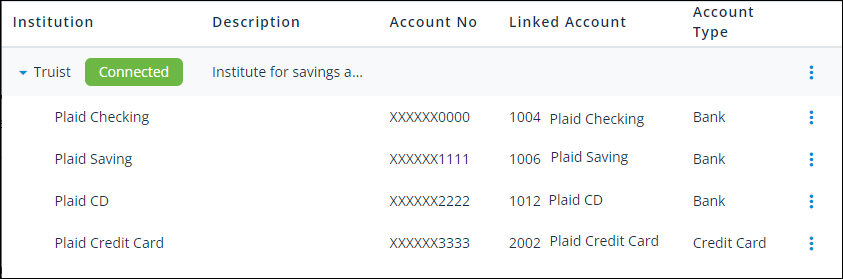

Source: https://rmxhelp.rentmanager.com/Topics/Express/Action/Bank-Sync-Additional-Account-Add.htm
Connect an Additional Account to an Institution
The Bank Sync feature in Rent Manager uses a built-in integration with Plaid to safely and securely connect with your bank or credit card institution. You can add any accounts you have open with that institution so that no matter what bank or credit card general ledger (GL) account you perform a reconciliation on, you can sync your transactions in real time.
If you open a new account at an institution or decide you want to sync another existing account at that institution, you do not need to go through the steps of connecting to the institution again. Since your connection is already in place, you simply need to add the account to the existing connection. For more information on connecting an institution, refer to Set Up Bank Sync.
More Information
This feature is licensed and must be purchased separately. For more information, contact your sales representative at sales@rentmanager.com.
Related Privileges
| Group | Privilege | Column |
|---|---|---|
| Accounting | Manage Bank Sync Setup | Enabled |
For more information, refer to Control User Access.
To add an account to a connection, do the following:
-
Go to
 arrow_forward Accounting arrow_forward
arrow_forward Accounting arrow_forward  Accounting Setup arrow_forward General arrow_forward Bank Sync Setup.
Accounting Setup arrow_forward General arrow_forward Bank Sync Setup.
The Bank Sync Setup page displays. -
Locate the institution you wish to add an account. In the image below, the institution is the row named Truist.

-
On the desired institution row, click
 arrow_forward Manage Connected Accounts.
arrow_forward Manage Connected Accounts.
The Plaid Link pop-up displays. - Click Continue to agree to Plaid's privacy policy.
-
Select each additional account you wish to sync to Rent Manager, then click Continue.
-
In the Linked GL Account column, select the corresponding GL account to which institution account should be mapped.
-
Click Save.
The account is now added to the institution connection.